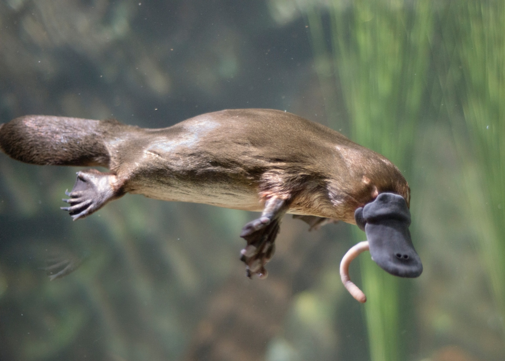
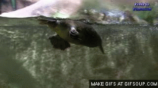
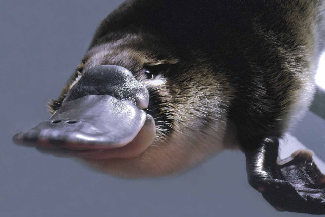

• O R N I T O R R I N C O •
O QUE É O QUE É?
Tem bico, patas com membranas interdigitais, cloaca, rabo parecido com o de castor, bota ovos, tem pêlos,
alimenta suas crias com leite sem auxílio de mamilos e o macho possui um esporão contendo veneno com bases
bioquímicas semelhantes às das serpentes? Se você pensou que era uma aberração da natureza, errou!
Estamos falando do ornitorrinco!
O ornitorrinco é um dos mais distintos animais do nosso planeta! Muitas pessoas acreditam que a espécie é reflexo
de uma mutação genética, por suas características, mas isso não é verdade.
O ornitorrinco (Ornithorhynchus anatinus) é um animal silvestre que não foi selecionado geneticamente, nem é fruto de
mutação genética. Na realidade, estudos sugerem que são descendentes de uma família de mamíferos, da ordem
Monotremata, que há mais 150 milhões de anos se “separou” das demais e manteve as características dos répteis, que eram seus
ancestrais. Inclusive, esses atributos foram vantajosos para a espécie, permitindo a sua evolução e presença até
os dias atuais.

CARACTERÍSTICAS
Mesmo de relance, o ornitorrinco parece estranho. Eles têm um corpo pequeno e hidrodinâmico. A cauda é larga e plana, um
pouco como a cauda de um castor, mas coberta de pelos. Esses animais ostentam patas com membranas para nadar, e os pés
dianteiros têm mais correias que a traseira. Finalmente, eles têm um bico largo e plano, semelhante à de um pato.
Animal de cauda de castor, bico de pato, postura de ovos e pés de lontra tem uma aparência muito incomum. Os primeiros
naturalistas europeus consideraram uma fraude elaborada quando a encontraram pela primeira vez. Este também é um dos poucos
mamíferos venenosos.


A cauda do ornitorrinco são cobertos com pelo marrom denso que mantém o animal quente, esse pelo retém uma camada
de ar e é à prova d'água. O animal armazena reservas de gordura na cauda, possui um focinho grande e emborrachado e pés palmados.
Essas características não são encontradas em nenhum mamífero conhecido e são muito mais próximas às de um pato. Ao caminhar em
terra, os pés da frente são dobrados para trás. O focinho do ornitorrinco é um órgão sensorial com narinas localizadas na
superfície dorsal e a boca na parte inferior. Os olhos e ouvidos do ornitorrinco estão localizados em um conjunto de
ranhuras que é fechado ao nadar.
O ornitorrinco pode crescer até um peso que varia de um a três quilos. O ornitorrinco masculino cresce mais que o feminino,
atingindo uma média de 50 cm. de comprimento total. O tamanho médio varia amplamente de uma região para outra. O
ornitorrinco tem uma temperatura corporal média mais baixa do que outros mamíferos. Isso ocorre devido à adaptação a
condições ambientais adversas.
O ornitorrinco adulto possui almofadas fortemente queratinizadas no lugar dos dentes e a mandíbula do ornitorrinco é
construída diferentemente da de outros mamíferos.
Fontes Usadas:
https://www.mundoecologia.com.br/animais/alimentacao-do-ornitorrinco-o-que-elas-comem/
e https://escolakids.uol.com.br/ciencias/ornitorrinco.htm